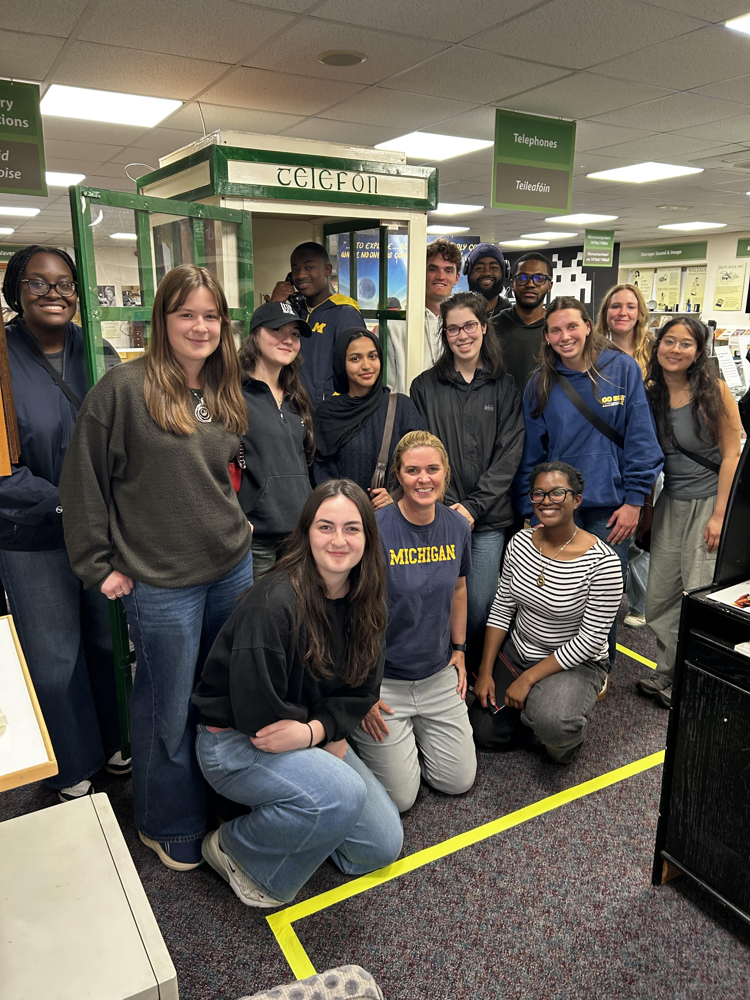
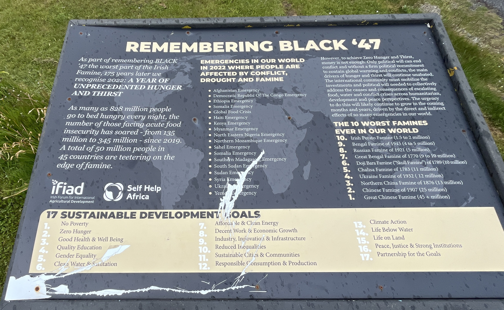

The Computer and Communications Museum of Ireland in Galway holds early radios, iconic computers, and vintage games — including Space Invaders and Pac-Man — that visitors can play. Together the exhibits trace the evolving technological landscape across the decades and Galway’s role in shaping it.

The U-M group at the Computer & Communications Museum of Ireland.
Galway: Ireland’s First Digital City
Galway is Ireland’s first digital city, incorporating digital technology into its core infrastructure to address the emerging needs of society and improve the sustainability of the built environment. In the 1970s, Digital Equipment Corporation (DEC) was one of the world’s leading computer companies when it opened its first manufacturing plant outside the USA at Mervue. Its presence had a significant positive impact on Ireland’s exports, helped reverse Irish emigration, and transformed Galway into a vibrant, cosmopolitan city with a global reputation for its skilled industrial workforce and scientific research sector.
“In the 1970s Galway transformed from being a small provincial city in the most economically deprived region of Ireland, characterised by a high level of subsistence farming, into a cosmopolitan manufacturing hub of advanced computers, telecommunications equipment and refrigerators exporting to mainland Europe, the Middle East and Africa. Two of the corporations responsible for this change were Digital Equipment Corporation (USA), then the world’s second largest computer company, and Northern Telecom (Canada), a global leader in digital telecommunications.”
Workers in a 20th-century computer room — the Galway digital workforce taking shape.
Looking Forward: AI Research
The University of Galway’s Data Science Institute is at the forefront of AI research in Ireland. Their work centers fourteen of the United Nations’ global Sustainable Development Goals (SDGs):
The United Nations’ 17 Sustainable Development Goals.
SDG 1
No Poverty
SDG 2
Zero Hunger
SDG 3
Good Health and Wellbeing
SDG 4
Quality Education
SDG 5
Gender Equality
SDG 6
Clean Water and Sanitation
SDG 7
Affordable and Clean Energy
SDG 8
Decent Work and Economic Growth
SDG 9
Industry, Innovation, and Infrastructure
SDG 10
Reduced Inequality
SDG 11
Sustainable Cities and Communities
SDG 12
Responsible Consumption and Production
SDG 13
Climate Action
SDG 15
Life on Land
SDG 16
Peace, Justice, and Strong Institutions
SDG 17
Partnerships for the Goals
These goals are not lost outside of academia -- they can be seen in monuments and memorials throughout Galway.

The goals featured on a memorial to the Black '47 - the worst part of the Irish F
Accessibility Checklist
Exhibits and Objects: Small objects are mostly mounted at or below seated eye level. Display cases are shallow enough to allow clear viewing from above. While objects are visible, some description cards are placed flat, which makes them difficult to read for anyone with a lower eye level; tilting the cards would improve readability for all visitors.
Labels and Text: Overall, contrast and fonts on labels were well done and easy to read. There were issues with sizes at some points — broad descriptions and historical stories were easy to decipher, but smaller image labels were extremely difficult, and the museum offered no audio or braille options for visually impaired visitors.
Audio Visuals and Interactive: Inconsistent — some exhibits offered audio guides while others lacked accessibility indicators. Video displays did not include captions, and interactive headphones appeared intended more for general use than accessibility support.
Pathway and Navigation: The museum space is quite tight, and wheelchair users would likely have trouble navigating the exhibit. Sections are clearly marked with signage.
Seating and Furniture: The museum contains seating at the front and in front of larger screens.
Safety and Content: Clearly marked exits, verbally explained at the start of the tour. Fire alarms appear to have both light and sound. However, due to the cramped space, visitors with mobility disabilities may have trouble quickly exiting the museum.
What Students Learned and Enjoyed
Students learned about the origins of telecommunications in Ireland — pioneering wireless transmission across the Atlantic, communicating across airwaves instead of through the telegraph lines under the ocean. A short video on Marconi’s wireless work helped tie the museum’s collection of early radios into a much larger story.
A tight corner of the museum — vintage games still very much playable.
Many students enjoyed playing the vintage games scattered throughout the museum, and the phone booth that played music from different decades was a recurring favorite.
The racing-game cabinet, a constant crowd.The retro phone booth that played music from different years.
Accessibility Details & Stand-out Exhibits
Low-set arcade cabinets
Most of the video games are low enough for a wheelchair user to reach controls and screen.
A cabinet set low enough for a seated player.
Elevator to the second floor
An elevator on the main floor of the building reaches the museum’s second-floor exhibits.
Elevator access to the upstairs exhibits.
Flashing vintage monitors
Many of the vintage CRT monitors flash and glitch, which can be difficult to look at and may trigger headaches or seizures.
A flashing, glitching CRT in the corner of the room.
Tight pathways
Several rooms — particularly the recreated mid-century schoolroom — are not wide enough for wheelchair access.
A recreated schoolroom with very narrow paths.
Photo Gallery
Robo-dog and friend on the futuristic exhibit floor.Vintage chassis opening up like a car hood for service.An early FIFA running on period-correct hardware.“The Macintosh is the most compatible PC in the world.”Ireland’s oldest computer — a 1965 Solartron.Our racing-game leaderboard — George with the top score.Mario — a 2016 robotic companion for people with dementia.A wall of vintage hardware and period advertising.